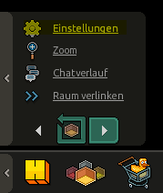
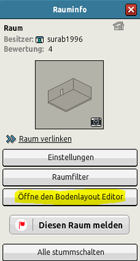
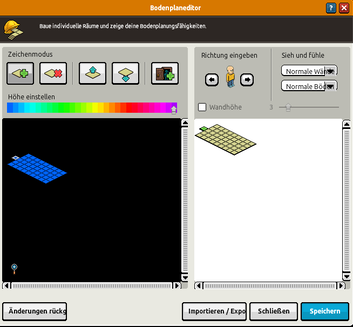
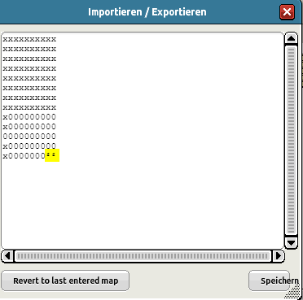
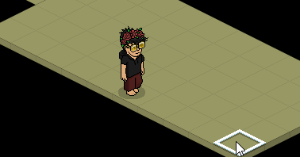

Interessantes aus Habbo
Nicht betretbare Böden
Um mit dem Bodenlayout Editor arbeiten zu können ist BC notwendig. Damit können verschiedene Einstellungen für den Boden im Raum gemacht werden. Es gibt sogar die Möglichkeit Böden zu erstellen, die nicht betretbar sind. Wie das funktioniert wird hier erklärt.
Um den Editor zu öffnen klickt man auf Einstellungen dann auf Öffne den Bodenlayout Editor
Um den Editor zu öffnen klickt man auf Einstellungen dann auf Öffne den Bodenlayout Editor

1. Auf Einstellungen

2. Auf Öffne den Bodenlayout Editor

3. Das ist der Bodenlayout Editor
Wir brauchen die Funktion Importieren/Exportieren. Damit können andere z. B. ihre Einstellungen per Code an den Raumbesitzer weiter geben oder von einem anderen Raum die Einstellung kopieren.
Klickt man auf diese Funktion öffnet sich dieses Fenster und man kann dort etwas eintippen. Die Nullen im Code sind die aktuellen Böden, die bearbeitet werden können. Das "x" lassen wir hier außen vor. Um ein Boden zu erzeugen worauf man nicht drauf kann ersetzt man eine Null mit ² oder ³. Beachte, dass es hochgestellte Zahlen sind (Exponent). Meistens kann man diese Zahlen mit STRG + ALT+ 2 oder 3 erzeugen.

Der gelbe Bereich zeigt die hochgestellten Zahlen
Dann drückt man auf Speichern und die Einstellung wird übernommen. Im Raum gibt es dann zwei Böden, die man nicht betreten kann.
Wir verlängern den Bereich, um zu zeigen, dass man beim durchlaufen die zwei Böden ausweicht und nicht drauf kann.

Böden sind nicht betretbar
Leider können auf dieser Fläche auch keine Möbel abgestellt werden, dass heißt man muss da den Boden so nehmen wie er ist. Außer man erstellt eine optische Täuschung, dann sieht es so aus als wären auf diese Bereiche Fliesen oder was man sonst gerne für Möbel an dieser Stelle haben möchte. Wie eine optische Täuschung aussehen kann wird hier gezeigt.